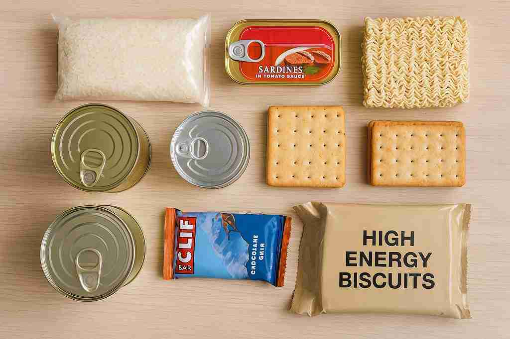
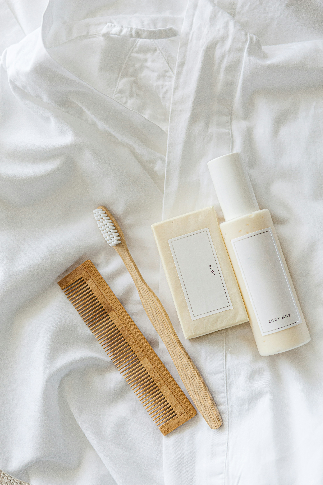
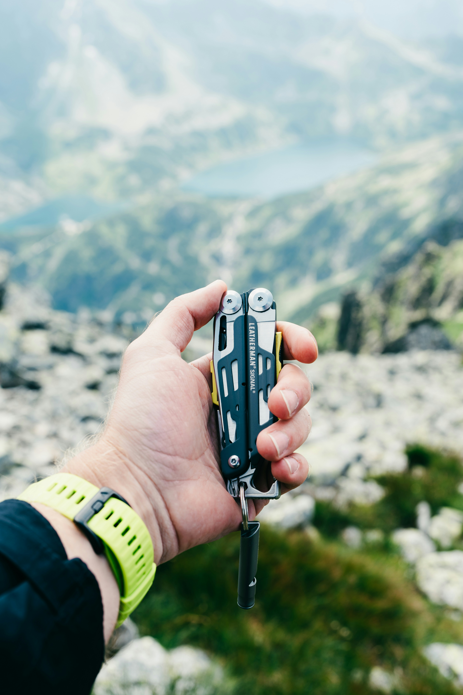
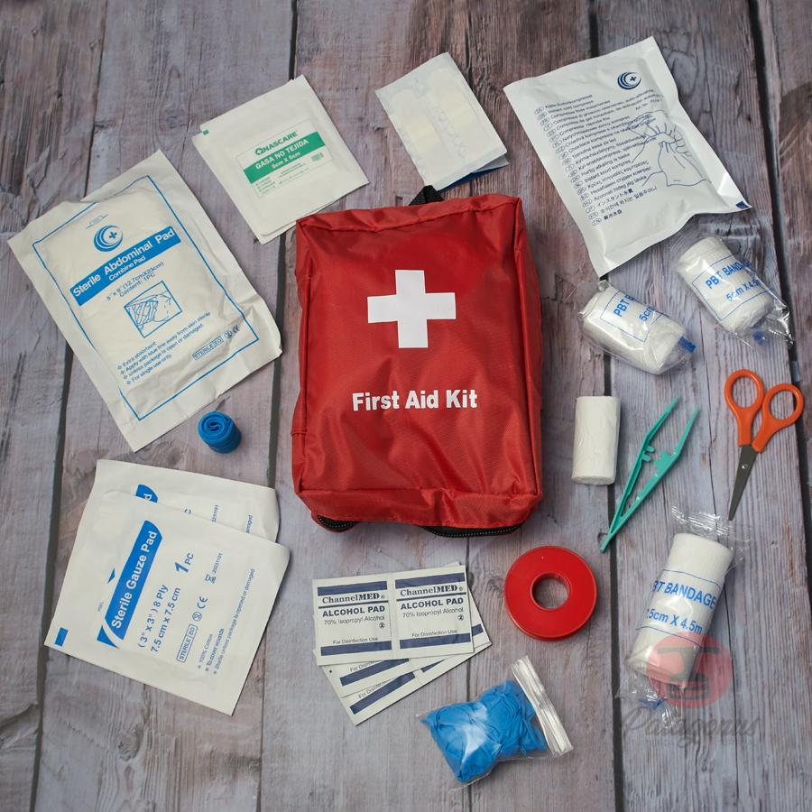
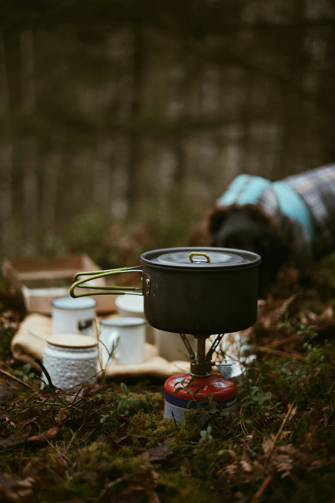

Guia de Camping
 Equipamiento
Equipamiento
⦿ El equipo de campamento es vital porque garantiza que la experiencia en la naturaleza sea segura y cómoda.
Su principal función es brindarte protección inmediata contra el clima y cualquier imprevisto,
mientras que el resto de los artículos aseguran el descanso necesario y la capacidad de valerte por ti mismo
✮ Mira las Cartas para ver los objetos mas importantes del camping
✮ Mira las Cartas para ver los objetos mas importantes del camping
 Tienda de Acampar
Tienda de Acampar
⦿ Es el refugio fundamental que te proporciona seguridad y privacidad.
Su importancia es Máxima porque te protege directamente de todos los elementos climáticos adversos (lluvia, viento, nieve) e insectos.
Debe ser elegida según el clima y el número de ocupantes.
✮ Una recomendacion son las Tiendas de marcas de trekking (Marmot, MSR, etc..) con mejor impermeabilidad.
✮ Una recomendacion son las Tiendas de marcas de trekking (Marmot, MSR, etc..) con mejor impermeabilidad.
 Mochila
Mochila
⦿ Es tu sistema de transporte para todo tu equipo.
Su diseño ergonómico y ajuste son vitales para distribuir el peso correctamente en la cadera,
no en los hombros. Una mochila incómoda o mal ajustada puede arruinar una caminata.
Su importancia es Máxima para la movilidad y comodidad.
✮ Modelos con estructura interna y ajustes personalizables que transfieren parte del peso a las caderas, haciendo la caminata más cómoda (Osprey o Deuter de gama media).
✮ Modelos con estructura interna y ajustes personalizables que transfieren parte del peso a las caderas, haciendo la caminata más cómoda (Osprey o Deuter de gama media).
 Saco de Dormir
Saco de Dormir
⦿ Su función es mantener el calor corporal que generas. La clave es el índice de temperatura el cual
debe ser adecuado para la temperatura mínima que esperas.
Su importancia es Alta para garantizar un descanso profundo y prevenir la hipotermia.
✮ Mi Recomendacion son Sacos con aislamiento sintético de marca(Marmot, MSR, etc..) que se comprimen mejor
✮ Mi Recomendacion son Sacos con aislamiento sintético de marca(Marmot, MSR, etc..) que se comprimen mejor
 Ropa
Ropa
⦿ Cuando vas a acampar NO se trata solo de vestirse, sino de usar un sistema de capas (layering): una capa base que maneja la humedad,
una capa media que aísla y una capa externa que protege del viento y la lluvia.
Esta capacidad de adaptación es de Máxima Importancia para regular tu temperatura corporal.
✮ Un Kit de Capas 3-en-1 con capa base sintética, forro polar y chaqueta impermeable/transpirable de marca (DryVent o Omni-Tech), ofrece una protección sólida, versátil y transpirable contra el clima.
✮ Un Kit de Capas 3-en-1 con capa base sintética, forro polar y chaqueta impermeable/transpirable de marca (DryVent o Omni-Tech), ofrece una protección sólida, versátil y transpirable contra el clima.
 Linterna
Linterna
⦿ Es la fuente de luz esencial una vez cae la noche. La frontal es superior porque permite tener ambas manos libres para cocinar,
armar la tienda o leer un mapa. Su importancia es Alta para la seguridad y la navegación nocturna.
✮ Una Linterna Frontal de 300-450 Lúmenes (Petzl TIKKA) con batería regulada y luz roja. Esto garantiza un brillo constante y potencia suficiente para navegar de noche, optimizando la duración de la batería.
✮ Una Linterna Frontal de 300-450 Lúmenes (Petzl TIKKA) con batería regulada y luz roja. Esto garantiza un brillo constante y potencia suficiente para navegar de noche, optimizando la duración de la batería.

Alimento
⦿ Es tu suministro de energía y nutrientes para las actividades. Se recomienda comida no perecedera,
ligera y con alta densidad calórica (liofilizada, barras, frutos secos).
Su importancia es Máxima para la supervivencia y el rendimiento físico
✮ Comida Liofilizada de Marca combinada con Barras Energéticas. Esta opción asegura una alta densidad calórica y bajo peso, esencial para caminatas sin cargar comida pesada o perecedera.
✮ Comida Liofilizada de Marca combinada con Barras Energéticas. Esta opción asegura una alta densidad calórica y bajo peso, esencial para caminatas sin cargar comida pesada o perecedera.

Articulos personales
⦿ Incluye la higiene básica, medicamentos personales y, crucialmente, el Aislante o Colchoneta.
Este último es lo más importante para el frío, ya que bloquea la pérdida de calor por contacto con el suelo.
Su importancia es Alta por higiene, salud y termorregulación.
✮Kit de viaje ultraligero que incluye jabón biodegradable multiusos, cepillo de dientes plegable, pasta de dientes sólida o en tabletas y una Toalla de Microfibra de secado rápido. Su valor es que mantiene la higiene con el mínimo impacto ambiental y el menor peso posible.
✮Kit de viaje ultraligero que incluye jabón biodegradable multiusos, cepillo de dientes plegable, pasta de dientes sólida o en tabletas y una Toalla de Microfibra de secado rápido. Su valor es que mantiene la higiene con el mínimo impacto ambiental y el menor peso posible.
 Encendedor
Encendedor
⦿ Te proporciona una fuente de calor controlada para encender la estufa o iniciar una fogata (si está permitido).
Se deben llevar múltiples métodos (fósforos impermeables, encendedor, ferrocerio).
Su importancia es Alta para cocinar y, potencialmente, para una emergencia.
✮ Un Dúo de Encendedor de Butano y Barra de Ferrocerio. Esta combinación garantiza una fuente de fuego doble y confiable, ya que el ferrocerio funciona incluso mojado.
✮ Un Dúo de Encendedor de Butano y Barra de Ferrocerio. Esta combinación garantiza una fuente de fuego doble y confiable, ya que el ferrocerio funciona incluso mojado.

Herramienta Multiusos
⦿ Combina las funciones de cuchillo, alicate, sierra, abridor, etc. Es fundamental para reparaciones rápidas del equipo,
preparar alimentos o cortar leña pequeña. Su importancia es Media/Alta por su versatilidad en el campo.
✮ Una Multiherramienta de Marca con Bloqueo (Leatherman Sidekick) fabricada con buen acero inoxidable. Proporciona durabilidad, fiabilidad y seguridad gracias a su bloqueo de hoja.
✮ Una Multiherramienta de Marca con Bloqueo (Leatherman Sidekick) fabricada con buen acero inoxidable. Proporciona durabilidad, fiabilidad y seguridad gracias a su bloqueo de hoja.

Botiquin
⦿ Kit con lo necesario para tratar lesiones menores (cortes, ampollas), picaduras y dolores.
Debe incluir conocimientos básicos de primeros auxilios.
Su importancia es Máxima y es vital para manejar situaciones de emergencia lejos de la civilizació.
✮ Un Kit de Primeros Auxilios de Montaña Pre-ensamblado de marca (Adventure Medical Kits). El kit está optimizado y contiene artículos de calidad para tratar eficazmente las lesiones comunes al aire libre.
✮ Un Kit de Primeros Auxilios de Montaña Pre-ensamblado de marca (Adventure Medical Kits). El kit está optimizado y contiene artículos de calidad para tratar eficazmente las lesiones comunes al aire libre.

Utensilios de cocina
⦿Lleva un kit que incluya la estufa, el combustible, ollas y recipientes.
Es esencial para preparar alimentos calientes y hervir agua para hacerla potable.
Su importancia es Media/Alta, ya que una comida caliente puede elevar la moral y reponer energías.
✮ Un Sistema de Cocción Integrado (Jetboil o MSR PocketRocket) que combina el quemador y la olla. Su gran valor es la alta eficiencia en el consumo de combustible para hervir agua rápidamente y ahorrar espacio
✮ Un Sistema de Cocción Integrado (Jetboil o MSR PocketRocket) que combina el quemador y la olla. Su gran valor es la alta eficiencia en el consumo de combustible para hervir agua rápidamente y ahorrar espacio